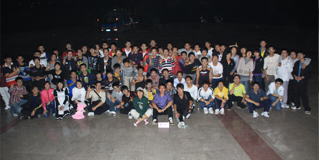
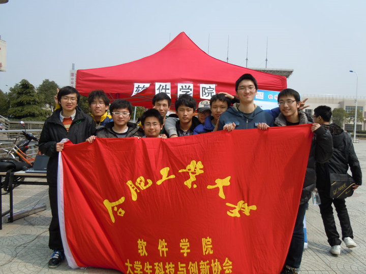

10分钟带你了解合工大软件学院
向上滑动翻页
软件学院怎么样啊？
软院前身是计算机学院下面的一个专业，后来响应国家发展软件行业的号召，成立了软件学院，将“软件工程”这个专业划入了软件学院。
从总体的教学质量上讲，合工大属于一本院校，而且是“211 工程”院校，不会差到哪儿去，但相比国内的一流高校，还是有明显的差距的。但学校好坏只是一个环境，想出成绩还得靠自己努力。
多少分能进啊？
上图是软件学院成立以来每一年在安徽省的录取分数线，上面一条是学院的线，下面一条是理科一本线。可以看出两条线之间的距离在逐年拉大，预计今年要过理科一本线至少 70 分以上才能进。
由于各省的高考总分不同，这里仅以安徽省为例，其它省份的历年分数线可以到这里查询：合工大历年分数查询（选“合肥校区”）
软件学院有多少人啊？男女比多少？
软件学院成立于 09 年，现有 3 届毕业生，每个年级 2 个班，每班 40+ 人，本科阶段共有 300 多人。放眼整个合工大，我们在人数上并不占优势，但人少也有人少的好处，大家彼此之间的交流更容易，跨年级交流的机会也很多。
软件学院的男女比例在 6:1 和 13:1 之间徘徊（毕竟人口基数少，每相差一个女生，数字就会大不一样），具体如上图所示，蓝色表示男生，红色表示女生。“狼多肉少”的情况在工科专业里非常普遍。
软件学院在哪个校区？
软件学院4年全部都在翡翠湖校区（俗称新区），除了极少数实验课因为仪器设备在老区（学校本部，在合肥），会安排到那边上几节课，绝大部分教学活动都在新区进行。
学院办公室（简称“院办”）位于图书馆，从图书馆北面“软件学院”四个鲜红的大字右边那个门进去再右转就是了。院长办公室和学生组织办公室挨着。导员平常都在院办，有事情可以来这里找。学生社团开会通常也在这里。
要不要自己带电脑？
电脑要自己带。虽然学院有机房，但总有不方便的时候。开学就可以带，来了之后再买也行。专业对电脑并没有什么特殊的要求，主流价位的笔记本都能够满足学业所需，当然如果你出身富贵人家想买Macbook或是Alienware，我们也不拦着。
学院现有两个机房，坐标图书馆，专供本院学生使用。这对于学霸们来说是个很不错的资源，自习不用占座，夏天和冬天还有空调。机房电脑的配置还算不错：四核CPU，2G内存，40G硬盘，不带光驱，可以上网。
毕业生出路怎么样？工资多少？
09级毕业生有不少签了思科、华为、讯飞、虹软、巨人网络、欢聚时代、锐捷等名企的。考研有去科大、浙大、华中科大、中科院、国防科大的，保本校的当然更多点。有几个出国的，一个去了宾夕法利亚大学，还有一个去了南加利福尼亚大学。
10级在腾讯、网易、迅雷、华为、中兴、去哪儿、携程、浪潮等公司都有人，互联网企业占比明显提高。考研党去了北大、北航、上交、复旦、同济、港中文等，保本校的继续一群。留学一族现已占领洛杉矶、马里兰、布里斯托、伦敦、东京。总体比去年略好。
11级目前正处于毕业季，还没有准确消息，待日后继续更新。
毕业生起薪从4、5千到1万多的都有，平均在5000左右。工作一年后平均涨幅在1000左右。
软件工程都学点啥？

我们主要学习的编程语言有2种：C++和Java，到了高年级会学C#、汇编等其他语言，但并不做重点。非计算机专业因为要准备计算机二级考试，所以也会学习一些简单的C语言，但涉及的很浅。
专业课方面，数据结构、组成原理、操作系统、计算机网络、数据库、离散数学、软件测试……这些都是计算机相关专业学生的必修课。
我从来没写过代码，能学会吗？
放心，绝大部分人都是从零基础起步的，只有极少数人是有底子的。上课时候会从最基础的开始讲，不会因为有人已经会了就跳过不讲。除了常规的教学计划之外，院学生会和院科创中心还经常会安排学长学姐开展技术培训和考前指导，因此完全不用担心跟不上。
如果你想在暑假里先提前预习起来，也是可以的，你可以加入我们的新生群，这里有不少学长学姐们，可以根据你的兴趣帮你选择一些适合你的东西带你入门。
学费好贵啊！
软件工程专业的学费相比其他专业要贵不少，这不仅仅是合工大一家，全国的高校都这样。这个问题一直以来都是饱受争议的。一方面企业外聘教师、国外教学内容的版权、校企合作的实习等等，这些都是比较费钱的。另一方面兴办软件学院是由国家政策推动的，允许学校按实际成本收费。（关于政策的细节大家可以自行百度，这里不展开了）
学费压力大，但并不表示来的都是富家子弟，事实上有一半的同学都申请了助学金或是助学贷款，学校也有各种补贴，奖学金也很丰厚，因此只要认真学习、注意节约，费用的问题学校能帮你解决不少。
开学有摸底考试吗？
摸底考试并没有，但会有一个英语的测试，通常安排在军训第一周的周末，用于给大家安排英语课的教学班。考完之后会根据成绩把大家分成一级和二级，比例大致为对半。二级类似于快班，同样的教学内容，二级比一级提前一个学期结课。二级在大一下学期就可以参加英语四级考试，一级要到大二上学期才可以。除了影响英语四六级的考试时间，这两个级别在本质上并没有什么区别，因此即便不幸被划入一级也不必难过，因为并没有损失什么。
学生会 - 甜过初恋的回忆
软件学院的学生会成立于09年，与学院同时成立，是学院三大学生组织之一。主要负责组织一些校级、院级的活动，例如各种运动会、比赛、晚会等。学生活动是大学文化的重要组成部分，不管是组织还是参与，如果完全没有体验过的话，你的大学生活是不完整的，你总不希望等毕业之后回忆自己的大学生活，除了书本就再没其他了吧。而且人脉这东西，平时不积累，用时方恨少。加入学生会是积累人脉的众多方式中一个很好选择。
科创中心 - 大神的聚会，邀你来参加
大学生科技与创新中心（简称“科创中心”），成立于09年，软件学院三大学生组织之一。主要以科技创新为主线，是一个技术交流的理想平台。科创中心最出名的活动要数技术培训，每次培训会请到不同的学长学姐来给大家讲课，非常值得去听。科创中心还包括一个学生自发成立的LUG（Linux User Group），致力于Linux操作系统的推广和交流。今年新成立了创新基地，是做项目攒经验的不二之选。
微爱社 - 最微小的爱，最温暖的爱

软件学院青年志愿者联合会，名叫“微爱社”，是软件学院三大学生组织之一，成立于2012年3月，是学院目前最年轻的学生组织。微爱社目前有好几个非常有影响力的活动：例如“美丽校园”系列活动，不定期去到校园各处清理顽固垃圾。再比如“下乡支教”，微爱社与合肥市桃花工业小学联手进行定向支教。除此之外还有结合专业特色的计算机免费维修服务，计算机二级考前辅导等实用活动。